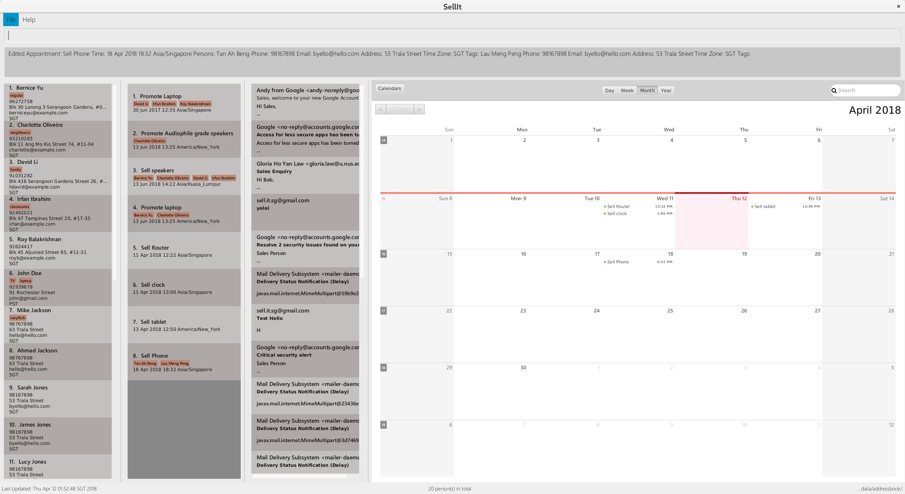

By: W10-B2 Since: Jun 2016 Licence: MIT
- 1. Introduction
- 2. Quick Start
- 3. Features
- 3.1. Unlock :
unlock - 3.2. Lock :
lock - 3.3. Reset password :
setPassword - 3.4. Viewing help :
help - 3.5. Adding a person:
add - 3.6. Adding an appointment:
addappointmentSince v1.3 - 3.7. Listing all persons excluding archived :
list - 3.8. Listing all persons including archived :
listall - 3.9. Listing all appointments :
listappointment - 3.10. Sorting all persons :
sort - 3.11. Export all persons :
export - 3.12. Listing all clients tagged with one or more specific tag (union):
listtagComing in v2.0 - 3.13. Archives a client:
archiveSince v1.2 - 3.14. Unarchives a client:
unarchiveSince v1.2 - 3.15. Editing a person :
edit - 3.16. Editing an appointment :
editappointmentSince v1.5rc - 3.17. Locating persons by name:
find - 3.18. Deleting a person :
delete - 3.19. Deleting an appointment :
deleteappointmentSince v1.4 - 3.20. Deleting a tag :
deletetag - 3.21. Listing entered commands :
history - 3.22. Undoing previous command :
undo - 3.23. Redoing the previously undone command :
redo - 3.24. Clearing all entries :
clear - 3.25. Switching Theme :
switchSince v1.1 - 3.26. Exiting the program :
exit - 3.27. Saving the data
- 3.28. Sending an email
Since v1.5rc - 3.29. Replying an email
[coming in v1.5] - 3.30. Forwarding an email
[coming in v1.5] - 3.31. Encrypting data files
[coming in v2.0]
- 3.1. Unlock :
- 4. FAQ
- 5. Command Summary
1. Introduction
Sell IT is for salesmen who prefer to use a desktop app for managing their clients. More importantly, Sell IT is optimized for those who prefer to work with a Command Line Interface (CLI) while still having the benefits of a Graphical User Interface (GUI). If you can type fast, Sell IT can get your contact management tasks done faster than traditional GUI apps. Interested? Jump to the Section 2, “Quick Start” to get started. Enjoy!
2. Quick Start
-
Ensure you have Java version
1.8.0_60or later installed in your Computer.Having any Java 8 version is not enough.
This app will not work with earlier versions of Java 8. -
Download the latest
addressbook.jarhere. -
Copy the file to the folder you want to use as the home folder for your Address Book.
-
Double-click the file to start the app. The GUI should appear in a few seconds.
 -
Type the command in the command box and press Enter to execute it.
e.g. typinghelpand pressing Enter will open the help window. -
Some example commands you can try:
-
list: lists all contacts -
addn/John Doe p/98765432 e/johnd@example.com a/John street, block 123, #01-01: adds a contact namedJohn Doeto the Address Book. -
delete3: deletes the 3rd contact shown in the current list -
exit: exits the app
-
-
Refer to Section 3, “Features” for details of each command.
3. Features
Command Format
-
Words in
UPPER_CASEare the parameters to be supplied by the user e.g. inadd n/NAME,NAMEis a parameter which can be used asadd n/John Doe. -
Items in square brackets are optional e.g
n/NAME [t/TAG]can be used asn/John Doe t/friendor asn/John Doe. -
Items with
… after them can be used multiple times including zero times e.g.[t/TAG]…can be used ast/friend,t/friend t/familyetc. -
Parameters can be in any order e.g. if the command specifies
n/NAME p/PHONE_NUMBER,p/PHONE_NUMBER n/NAMEis also acceptable. -
Some commands have command aliases which can be used in place of the command, e.g.
aforadd.
3.1. Unlock : unlock
You can unlock the APP while it is locked if you wish to do modification on contact and appointment. The initial password is 123456. Please remember that after unlocking, the content won’t automatically show. Please use list/listall/listappointment command.
Format: unlock PASSWORD
alias: ulk
Examples:
-
unlock 123456
3.2. Lock : lock
You can logout after doing modification on contacts and appointment on the APP. The initial password is 123456.
Format: lock
alias: lk
3.3. Reset password : setPassword
You may change the password of login. The initial password is 123456.
Format: setPassword OLD_PASSWORD NEW_PASSWORD
alias: sp
Examples:
-
setPassword 123456 123
3.4. Viewing help : help
Format: help
3.5. Adding a person: add
Adds a person to the address book
Format: add n/NAME p/PHONE_NUMBER e/EMAIL a/ADDRESS tz/TIMEZONE c/COMMENT [t/TAG]…
Alias: a
| A person can have any number of tags (including 0) |
Examples:
-
add n/John Doe p/98765432 e/johnd@example.com a/John street, block 123, #01-01 tz/SGT c/He can speak French -
add n/Betsy Crowe t/friend e/betsycrowe@example.com a/Newgate Prison p/1234567 tz/PST c/She can speak French t/criminal
3.6. Adding an appointment: addappointment Since v1.3
Adds an appointment to the address book
Format: addappointment [INDEX]… n/NAME d/DATETIME tz/TIMEZONE
Alias: aa
|
Datetime should be in the format YYYY-MM-DD HH:MM. Timezone should be in the format {Area}/{City}, e.g. Asia/Singapore |
Examples:
-
addappointment n/Meeting d/2018-06-13 13:25 tz/Asia/Singapore -
addappointment 1 2 n/Meeting d/2018-06-13 13:25 tz/America/New_York
3.7. Listing all persons excluding archived : list
Shows a list of all unarchived persons in the address book.
Format: list
Alias: l
3.8. Listing all persons including archived : listall
Shows a list of all persons (including archived) in the address book.
Format: listall
Alias: la
3.9. Listing all appointments : listappointment
Shows a list of all appointments in the address book.
Format: listappointment
Alias: lap
3.10. Sorting all persons : sort
Sorts all persons in the address book based on alphabetical order of their full names.
Format: sort
Alias: so
3.11. Export all persons : export
Exports all persons in the address book based to a csv file.
Format: export
Alias: ep
3.12. Listing all clients tagged with one or more specific tag (union): listtag Coming in v2.0
Shows a list of all clients in the address book tagged with any of the tags entered.
Format: listtag TAG…
Alias: lt
3.13. Archives a client: archive Since v1.2
Archives an existing client
Format: archive INDEX
Alias: ar
3.14. Unarchives a client: unarchive Since v1.2
Unarchives an existing client
Format: unarchive INDEX
Alias: uar
3.15. Editing a person : edit
Edits an existing person in the address book.
Format: edit INDEX [n/NAME] [p/PHONE] [e/EMAIL] [a/ADDRESS] [tz/TIMEZONE] [c/COMMENT] [t/TAG]…
Alias: e
Examples:
-
edit 1 p/91234567 e/johndoe@example.com
Edits the phone number and email address of the 1st person to be91234567andjohndoe@example.comrespectively. -
edit 2 n/Betsy Crower t/
Edits the name of the 2nd person to beBetsy Crowerand clears all existing tags.
3.16. Editing an appointment : editappointment Since v1.5rc
Edits an existing appointment in the address book.
Format: editappointment INDEX [PERSON INDEX]… [n/NAME] [d/DATETIME] [tz/TIMEZONE]
Alias: ea
Examples:
-
editappointment 1 2 3 n/Sell laptop
Edits the name of the appointment to "Sell laptop". Adds/Removes persons 2 and 3.
3.17. Locating persons by name: find
Finds persons whose names contain any of the given keywords.
Format: find KEYWORD [MORE_KEYWORDS]
Alias: f
Examples:
-
find John
ReturnsjohnandJohn Doe -
find Betsy Tim John
Returns any person having namesBetsy,Tim, orJohn
3.18. Deleting a person : delete
Deletes the specified person from the address book.
Format: delete INDEX
Alias: d
Examples:
-
list
delete 2
Deletes the 2nd person in the address book. -
find Betsy
delete 1
Deletes the 1st person in the results of thefindcommand.
3.19. Deleting an appointment : deleteappointment Since v1.4
Deletes the specified appointment from the address book.
Format: deleteappointment INDEX
Alias: da
Examples:
-
deleteappointment 2
Deletes the 2nd appointment in the address book.
3.20. Deleting a tag : deletetag
Deletes the specified tag from everyone in the address book.
Format: deletetag TAG_NAME
Alias: dt
Examples:
*delete family
Deletes the family tag for every person in the address book.
3.21. Listing entered commands : history
Lists all the commands that you have entered in reverse chronological order.
Format: history
Alias: h
|
Pressing the ↑ and ↓ arrows will display the previous and next input respectively in the command box. |
3.22. Undoing previous command : undo
Restores the address book to the state before the previous undoable command was executed.
Format: undo
Alias: u
|
Undoable commands: those commands that modify the address book’s content ( |
Examples:
-
delete 1
list
undo(reverses thedelete 1command) -
delete 1
clear
undo(reverses theclearcommand)
undo(reverses thedelete 1command)
3.23. Redoing the previously undone command : redo
Reverses the most recent undo command.
Format: redo
Alias: r
Examples:
-
delete 1
undo(reverses thedelete 1command)
redo(reapplies thedelete 1command) -
delete 1
redo
Theredocommand fails as there are noundocommands executed previously. -
delete 1
clear
undo(reverses theclearcommand)
undo(reverses thedelete 1command)
redo(reapplies thedelete 1command)
redo(reapplies theclearcommand)
3.24. Clearing all entries : clear
Clears all entries from the address book.
Format: clear
Alias: c
3.25. Switching Theme : switch Since v1.1
Switches theme from dark to light or vice versa. Persists across restarts.
Format: switch
3.26. Exiting the program : exit
Exits the program.
Format: exit
3.27. Saving the data
Address book data are saved in the hard disk automatically after any command that changes the data.
There is no need to save manually.
3.28. Sending an email Since v1.5rc
Press the email of any contact on the person panel for an email popup to appear. To close the window without sending, push ESC or the cancel button.
3.29. Replying an email [coming in v1.5]
Reply any email displayed on the email panel with the receiver and subject auto-filled, and the original contents on the bottom of the email.
3.30. Forwarding an email [coming in v1.5]
Forward any email displayed on the email panel with the subject auto-filled, and the original contents on the bottom of the email.
3.31. Encrypting data files [coming in v2.0]
{explain how the user can enable/disable data encryption}
4. FAQ
Q: How do I transfer my data to another Computer?
A: Install the app in the other computer and overwrite the empty data file it creates with the file that contains the data of your previous Address Book folder.
5. Command Summary
-
Unlock :
unlock PASSWORD
e.g.unlock 123456 -
Lock :
lock -
Set password :
setPassword OLD_PASSWORD NEW_PASSWORD
e.g.setPassword 123456 123 -
Add
add n/NAME p/PHONE_NUMBER e/EMAIL a/ADDRESS tz/TIMEZONE c/COMMENT [t/TAG]…
e.g.add n/James Ho p/22224444 e/jamesho@example.com a/123, Clementi Rd, 1234665 tz/SGT c/He can speak French t/friend t/colleague -
Add Appointment
addappointment [INDEX]… n/NAME d/DATETIME tz/TIMEZONE
e.g.add 1 2 n/Meeting d/2018-06-13 13:25 tz/America/New_York -
Clear :
clear -
Delete :
delete INDEX
e.g.delete 3 -
Delete appointment :
deleteappointment INDEX -
Edit :
edit INDEX [n/NAME] [p/PHONE_NUMBER] [e/EMAIL] [a/ADDRESS] [ti/TIMEZONE] [t/TAG]… -
Edit appointment :
editappointment 1 2 3 n/Sell laptop
e.g.edit 2 n/James Lee e/jameslee@example.com -
Archive :
archive INDEX -
Unarchive :
unarchive INDEX -
Find :
find KEYWORD [MORE_KEYWORDS]
e.g.find James Jake -
List :
list -
List all :
listall -
List appointment :
listappointment -
listtag :
listtag TAG… -
Help :
help -
History :
history -
Sort :
sort -
Export :
export -
Undo :
undo -
Redo :
redo